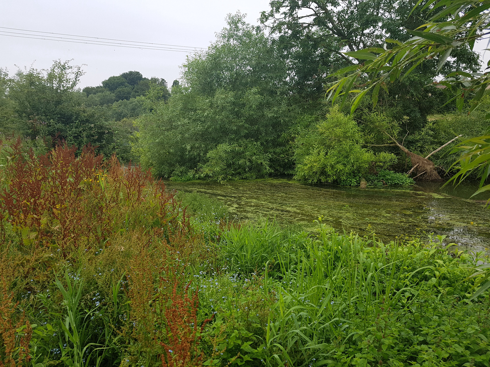

SHOP
- Beef
HELP
- Delivery
- Returns and Refunds
- Terms and Conditions
- Privacy Policy
- Contact us
- Address Hampton Gay farm,
- Hampton Gay, OXFORDSHIRE OX52QH
Old English Longhorn beef, lamb and mutton, raised on herb-rich pastures at Hampton Gay, just outside Kidlington. Order online, then collect from the farm or have it delivered.
Collect from the farm: Manor Farm, Hampton Gay, OX5 2QH, a few minutes from Kidlington.
Local delivery, £5, every Thursday (orders over £35) within 10 miles of the farm: Oxford, Kidlington, Woodstock, Bicester, Witney and the villages between.
UK-wide courier: available for the rest of the country.
Learn more about organic farming, our native breeds and our conservation work.


Offline Website Builder